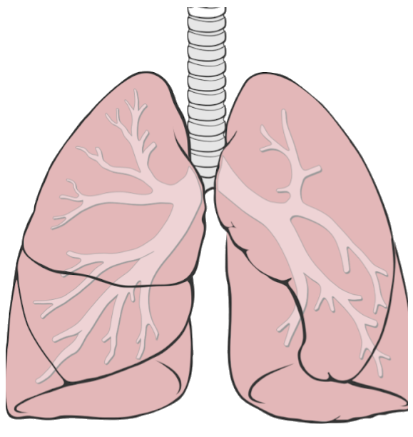

Annotate an image in place — tap a marker,
read the explanation, tap again to close.
Positions are percentages of the image, so nothing is measured at runtime.
The corner button opens the figure full screen; printing makes a textbook page of it.

Held open by cartilage rings, about 10–12 cm long. It divides at the level of the fourth thoracic vertebra. The right main bronchus leaves at a steeper angle and is the wider one. That is why aspirated material usually ends up in the right lung. Around 23 generations of branching down to the alveoli. Every division enlarges the total cross-section, so the flow slows down. Only the right lung has one. Together with the oblique fissure it separates three lobes — the left lung has two. Here the left lung steps aside for the heart. It is the reason the left lung is the smaller of the two. Runs from the back downwards to the front. Auscultating from behind, you are mostly listening to the lower lobe. Rests on the diaphragm and moves with every breath. Lying flat, the lower parts ventilate poorly — the reason for repositioning.One bubble at a time; tapping the picture or pressing Esc closes it. The corner button shows the figure full screen — the markers keep working there.
data-numbers numbers the markers — “look at number three”.
class="fragment" makes each one a native reveal fragment: remote, speaker view
and URL keep working.
Open this deck with ?print-pdf and use your browser's print.
The image prints on the slide as usual; its numbered legend — every label and text — goes onto a page of its own, so it never clashes with other content beside the picture. Bubbles and buttons are hidden.